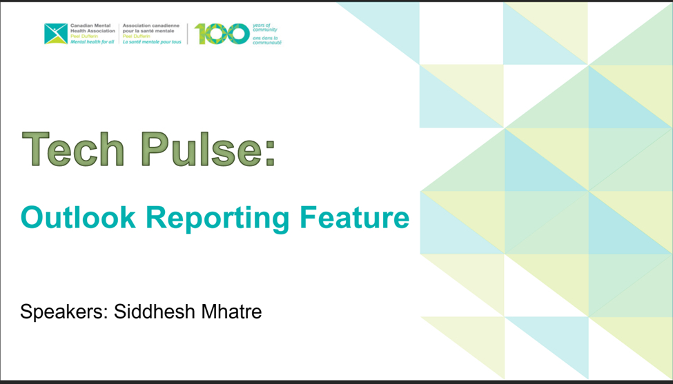
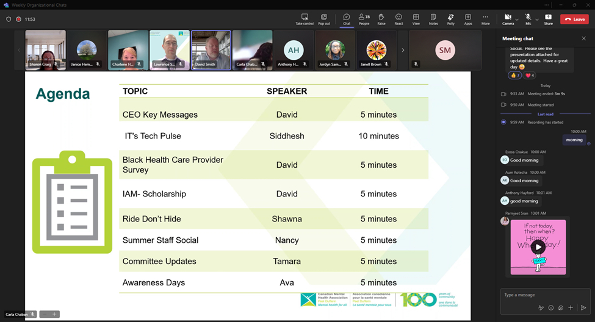

Experience
Education
University of Ontario Institute of Technology

Oshawa — Bachelor Of Information Technology September 2020 - December 2024
Since September 2020, I have been pursuing a Bachelor of Information Technology with a focus on Networking and I.T. Security in Oshawa, ON. Throughout my academic journey, I have demonstrated exceptional performance, earning a spot on the Dean's Honours List for the Fall 2020, Winter 2023, and Winter 2024 semesters. My involvement in the Netsoc (Networking and IT Students Society) and Bitsoc (Business and IT Student Society) since 2020 has provided me with invaluable networking opportunities, including participating in the prestigious Bitsoc Gala in 2021 and 2022. I have also honed my technical skills by competing in the Tacops CTF events in 2020, 2022, and 2023, where I tackled complex networking, Linux, and hacking challenges. Through this program, I have gained expertise in areas such as network architecture, cybersecurity, system administration, and cloud computing, equipping me with the skills needed to excel in the dynamic field of information technology.
Canadian Mental Health Association Peel Dufferin
Brampton — IT Assistant (End user support Co-op) June 2024 - August 2024
I'm an IT Assistant at CMHA Peel Dufferin in Brampton from June to August 2024. This is a 2-month Canada Summer Jobs co-op placement where I support the IT department by maintaining computer systems and networks, assisting with technical issues, and ensuring the smooth operation of IT services. I also install and configure hardware and software, perform system backups, and support end-users. Given my background in IT and passion for technology, this role is a great fit for me to apply my skills while contributing to a meaningful cause.
Tech pulse
Weekly the organization holds an org chat a teams meeting that every employee is invited to, different departments and teams present news, updates, and other organization-related changes. I and other members of the IT Department were allowed to present IT-related topics in a bi-weekly segment we call Tech Pulse. I presented the first Tech Pulse on the new outlook reporting phishing feature and will be presenting new topics in the coming future.
 
Employee summer social
Company event with food, for networking, and celebrating achievements.
K-line Group of Companies

Whitchurch-Stouffville — IT End-User Support Analyst (Co-op) May 2023 - December 2023
I completed an IT End-User Support Analyst Co-op at K-Line Group of Companies in Stouffville from May to December 2023. My role involved hands-on experience in device setup, maintenance, and troubleshooting, ensuring optimal functionality for users. I resolved diverse technical issues across operating systems, software, hardware, emails, mobile devices, and network security, demonstrating advanced problem-solving skills. Additionally, I prioritized service requests, delivering timely support both in-person and remotely. I contributed to developing and implementing standard operating procedures, enhancing process efficiency, and collaborating on technology advancement projects, acquiring practical knowledge in the field. This experience has equipped me with valuable technical skills and project management capabilities for future roles.
Costco Wholesale
Ancaster — Cashier July 2021 - April 2023

I worked as a Cashier at Costco in Ancaster from July 2021 to April 2023, where I provided excellent customer service while performing cashier duties. I assisted customers with purchases, located items, and promoted reward programs, ensuring a positive shopping experience. This role improved my customer service, communication, and problem-solving skills, which I'll apply to future positions.